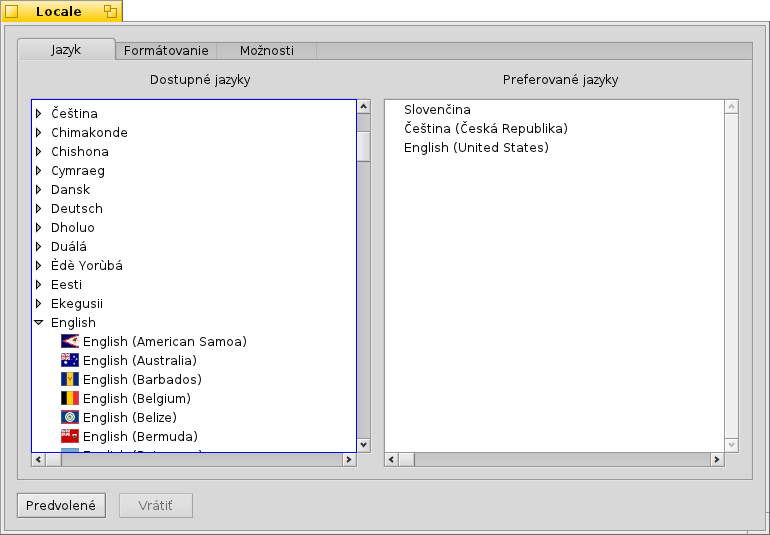
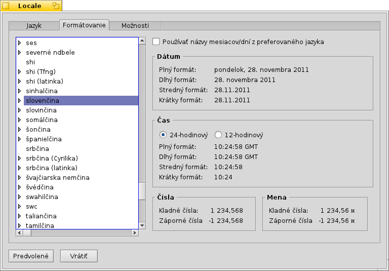

Slovenčina
Slovenčina Français
Français Deutsch
Deutsch Italiano
Italiano Русский
Русский Español
Español Svenska
Svenska 日本語
日本語 Українська
Українська 中文 ［中文］
中文 ［中文］ Português
Português Suomi
Suomi Magyar
Magyar Português (Brazil)
Português (Brazil) English
English Locale
Locale
| Panel: | ||
| Umiestnenie: | /boot/system/preferences/Locale | |
| Nastavenia: | ~/config/settings/Locale settings |
Lokalizačný systém Haiku zahŕňa nielen nahrádzanie textov ich prekladmi, ale aj komplexnejšie úlohy, ako napríklad formátovanie čísel, dátumov a časov tak, aby vyhovovali nastaveniam Locale, ktoré ste si zvolili.
 Jazyk
Jazyk
Haiku bolo preložené do tuctov jazykov, ale nanešťastie, niektoré z prekladov ešte nie sú dokončené. Z tohto dôvodu si môžete vybrať viac než jeden jazyk ako „Preferované jazyky“. Ak nejaký text chýba v preklade, nahradí sa slovami z nasledujúceho preferovaného jazyka. Angličtina je prednastavená ako posledná záložná možnosť (aj v prípade, že sa nenachádza v zozname).
V tomto prípade je ako prednastavený jazyk nastavená španielčina. Prvá záloha je čeština, a ak aj v tomto jazyku text chýba, bude zobrazený jeho anglický ekvivalent.
Ako môžete vidieť, rozbalenie záznamu jazyka na ľavej strane odhalí pod-záznamy pre konkrétne varianty alebo dialekty jazyka (ak sú dostupné).
Formátovanie
Na záložke môžete nastaviť formát dátumu, času, čísel a meny nezávisle na nastaveniach vášho prednastaveného jazyka.
Možno ste španiel žijúci v časti Švajčiarska, kde sa hovorí po taliansky. Takže by ste mali radi váš systém v španielčine, ale čísla a formát meny ako v práci: švajčiarsko/talianske.
Ak vám je pohodlnejšie pracovať so španielskymi názvami dní a mesiacov (napr. dátum úpravy súboru), môžete upraviť toto formátovanie času pomocou zaškrtávacieho políčka navrchu .
Samozrejme, že tento príklad nie je práve najbežnejší, ale ilustruje flexibilitu systému.
Možnosti
Posledná záložka poskytuje nastavenie, ktoré . Zrušte označenie zaškrtávacieho poľa ak preferujete lokalizované grafické prostredie, pričom budú zachované názvy aplikácií, nastavení a štandardné názvy priečinkov v angličtine.
Zmeny sú aplikované okamžite, ale práve bežiace programy môžu vyžadovať zatvorenie a opätovné spustenie než sa v nich prejaví nové nastavenie.
| obnoví všetky hodnoty na predvolené. | ||
| vráti späť nastavenia, ktoré boli aktívne, keď ste spustili nastavenia Locale. |